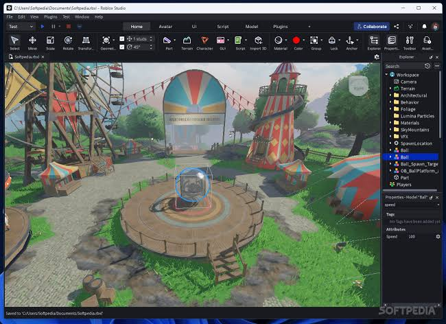

งานอดิเรก
เวลาว่างผมชอบลงมือสร้างสิ่งต่าง ๆ ด้วยโค้ด ซึ่งช่วยให้ได้ฝึกฝีมือและสนุกไปพร้อมกัน
สิ่งที่ชอบทำเวลาว่าง
เขียนโปรแกรม
ชอบฝึกเขียนโค้ดหลายภาษา ทั้ง PHP, Java, C/C++ และ Kotlin เพราะได้เห็นผลลัพธ์จากสิ่งที่คิดออกมาเป็นโปรแกรมที่ใช้งานได้จริง
เล่นเปียโน
เล่นเพื่อให้สมองผ่อนคลายก่อนกลับไปเขียนโค้ดต่อ

เกมและการพัฒนาเกม
มีหลายเกมไม่ว่าจะเป็นเซิร์ฟเวอร์เกม Minecraft หรือทำแมพเกม Roblox
งานอดิเรกเชื่อมกับการเรียนอย่างไร
"การเขียนโปรแกรมนอกเวลาเรียนทำให้เข้าใจเนื้อหาในห้องได้เร็วขึ้น การทำเซิร์ฟเวอร์และแมปเกมช่วยให้ได้ฝึกออกแบบหน้าจอ การจัดวาง และแก้ปัญหาจริง ส่วนการเล่นเปียโนเป็นช่วงเวลาพักสมองระหว่างทำโปรเจกต์ ช่วยให้กลับมาทำงานต่อได้อย่างมีสมาธิ"